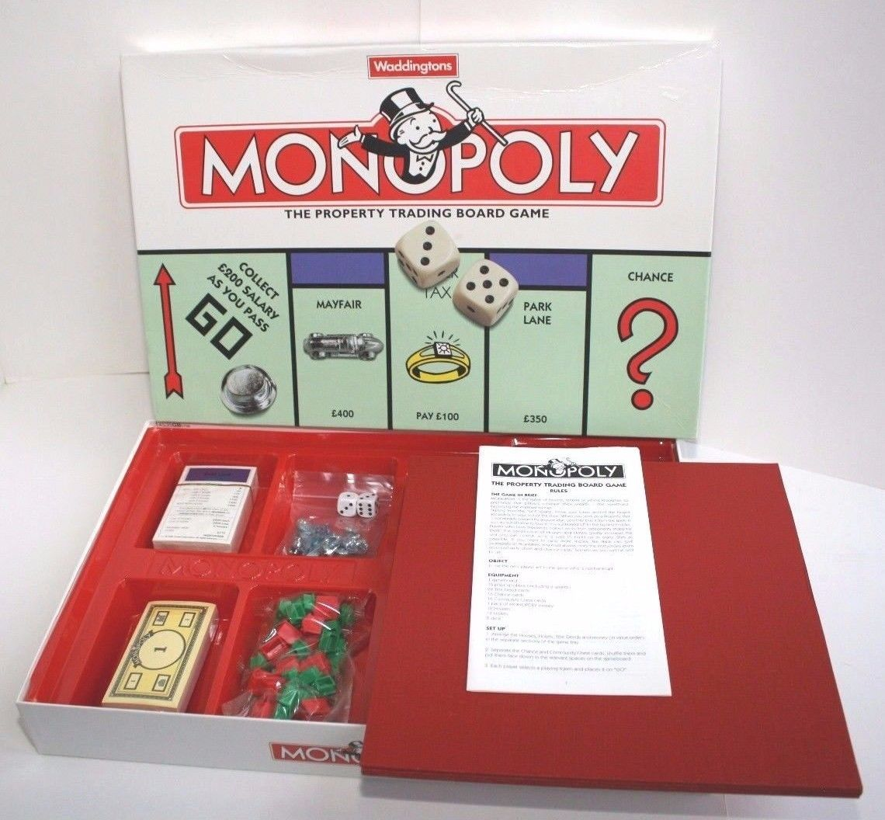
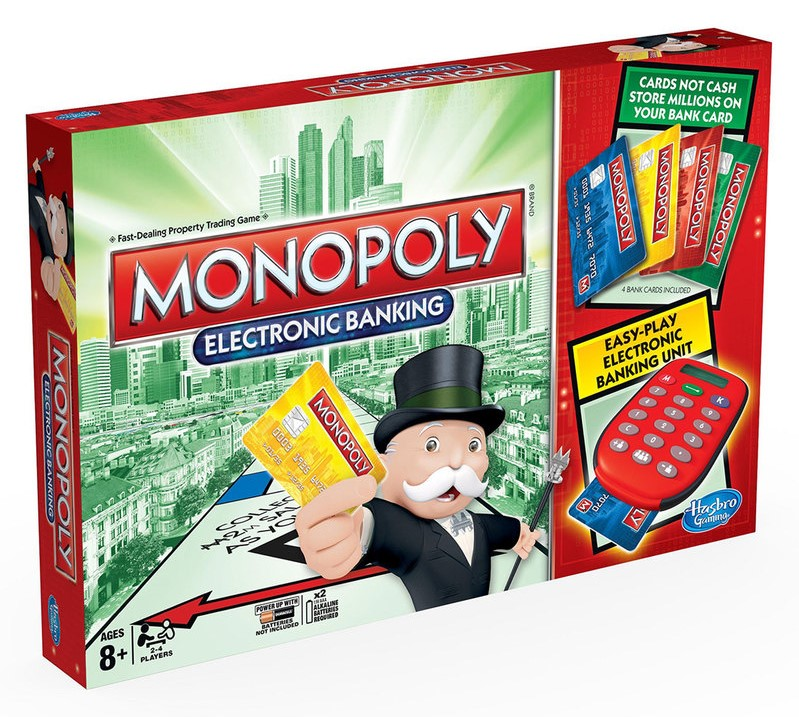

El juego de mesa más vendido de la historia
Un juego creado con la función de servir como herramienta para enseñar teorías acerca de la justicia social y económica extraídas del estudio titulado Progreso y Miseria de Henry George.
Comercializado por vez primero en el año 1936.
A lo largo de 80 años, el juego ha sufrido una notable evolución. Sus mútliples ediciones y sus tantas versiones han dado pie a que se cambiara desde la caja que lo contiene hasta los elementos que lo componen. Logrando así, manetenerse como el favorito a través de las décadas.
Con los años, la finalidad del juego cambió para solo disfrutar de un buen rato, negociando propiedades y hasta haciendo uso de medios electrónicos para todas las transacciones que requiere el juego.
